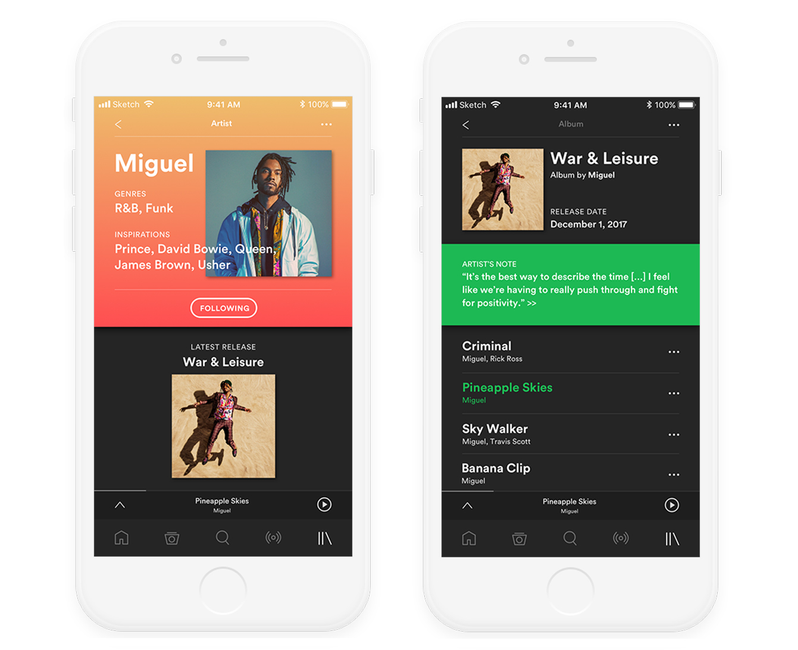
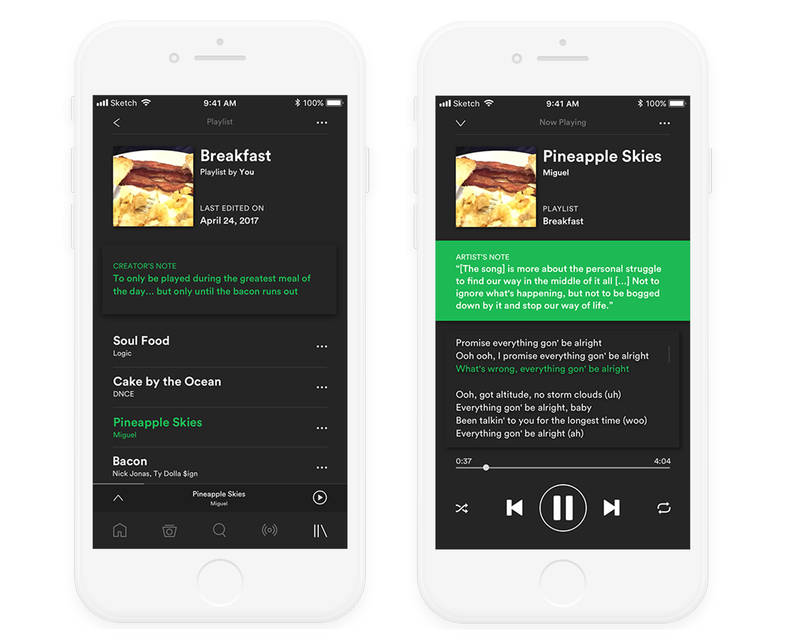
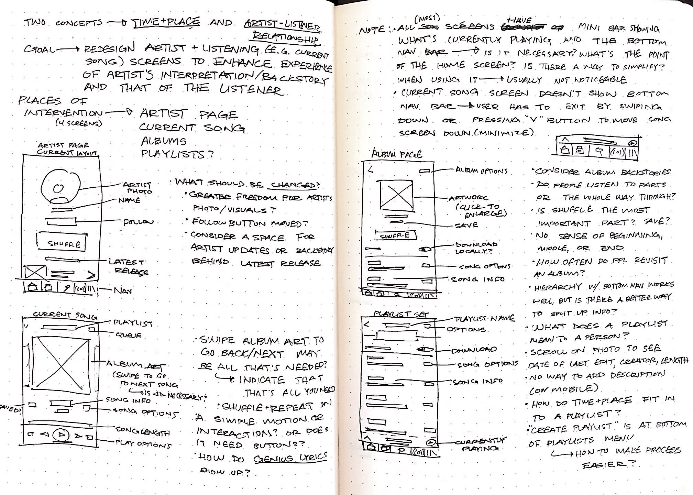
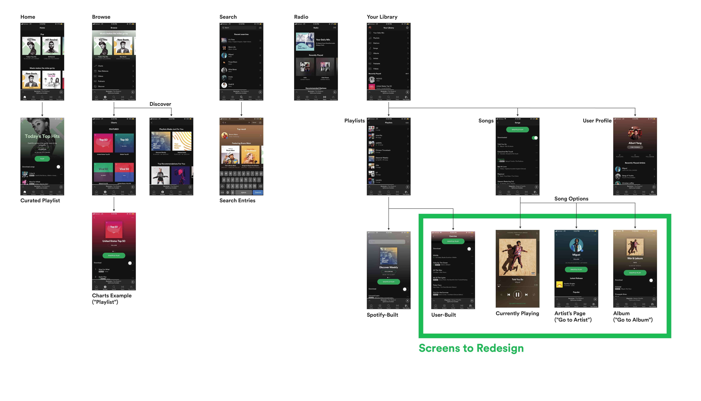
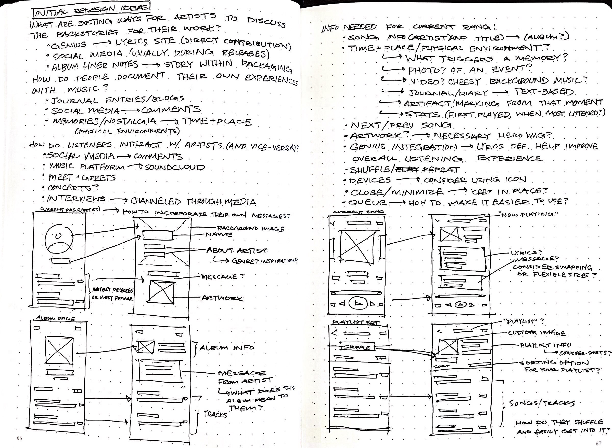
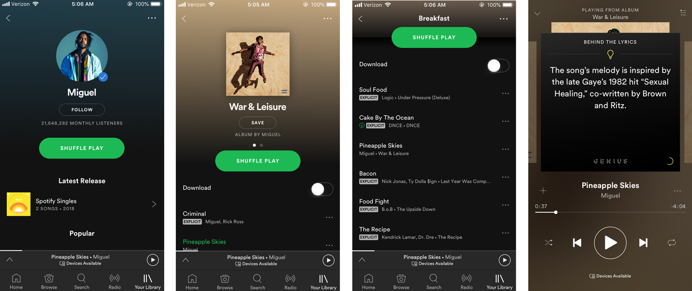
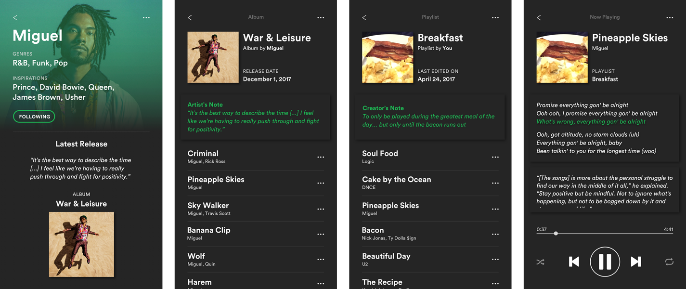
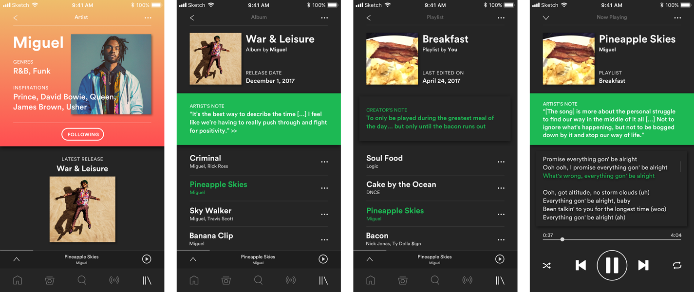

UX/UI
May 2018
Visual Design
Wireframing
Design Research
For this design challenge, I was to redesign four screens for Spotify's mobile app. I conducted user research to better understand how people used the app and what music meant to them, and aimed to design an experience that would better bring forth those personal and emotional aspects of listening to music. Process documentation can be found here on Medium.
Inspired by how pieces of music can mean different things to different people, I set out to redesign a way for artists and listeners to document their own interpretations of albums and songs. Another goal was to add more information about the artists, who they are, and where they come from. Creating a space where both parties can come together and realize they have encountered similar experiences can make listening to music a much more powerful experience, while also humanizing artists and fostering a culture where music can be an extension of an artist’s identity.


I examined the way Spotify's app is currently structured, and where the greatest points of intervention could be for my goal. By creating a condensed version of Spotify's user flows, I decided upon four screens that contain most of what the user looks for (Playlists, Albums, Artist's Pages, and Currently Playing). My main takeaways through my analysis were how the screens were structured visually, and which options are available in each one.


I brainstormed a few ideas and listed out different ways to foster a greater connection between listeners, the songs, and the artists. To create the wireframes, I determined the most important functions of each screen and sketched out ways of laying them out in my redesigns.

I created two sets of iterations, seen below (first row are the original screens, and the last row is the finalized iteration).



In-depth documentation of my process can be found here!